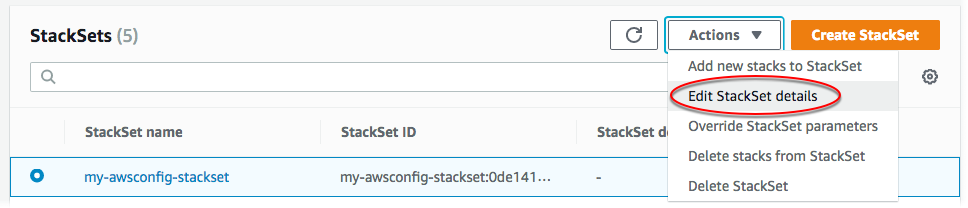

Le traduzioni sono generate tramite traduzione automatica. In caso di conflitto tra il contenuto di una traduzione e la versione originale in Inglese, quest'ultima prevarrà.
Aggiornamento del set di stack
Puoi aggiornare il tuo set di stack in AWS Management Console, o utilizzando AWS CloudFormation i comandi in. AWS CLIIn questa procedura guidata, viene modificata la frequenza di distribuzione predefinita degli snapshot per la configurazione del canale di distribuzione da 24hours (24 ore) a 12hours (12 ore).
Per sostituire i valori dei parametri per istanze di stack specifiche, consulta Sostituzione di parametri nelle istanze di stack.
Argomenti
Aggiornamento del set di stack utilizzando la console AWS CloudFormation
Apri la AWS CloudFormation console all'indirizzo https://console.aws.amazon.com/cloudformation
. -
Dal pannello di navigazione, scegli StackSets.
-
Nella StackSets pagina, seleziona il set di pila in Creazione di un set di stack cui hai creato. In questa procedura guidata è stato creato un set di stack denominato
my-awsconfig-stackset. -
Con il set di stack selezionato, scegliete Modifica StackSet dettagli dal menu Azioni.
 -
Nella pagina Choose template (Seleziona modello), scegliere se aggiornare il modello corrente, specificare un URL S3 su un altro modello o caricare un nuovo modello su AWS CloudFormation. In questa procedura guidata viene utilizzato il modello corrente. Scegliere Use current template (Utilizza modello corrente), quindi scegliere Next (Successivo).
-
Nella pagina Specificare StackSet i dettagli, modificate i valori dei parametri e specificate gli obiettivi di distribuzione.
-
[Autorizzazioni gestite dal cliente] Per Deployment targets (Destinazioni di distribuzione), scegliere Deploy stacks in accounts (Distribuisci stack in account). Incollare i numeri di account target nella casella di testo, separando più numeri con virgole.
[Autorizzazioni gestite dal servizio] Per Deployment targets (Destinazioni di distribuzione), scegliere gli account dell'organizzazione a cui eseguire la distribuzione.
-
Seleziona la Regione.
-
Modificare il valore del parametro Frequency (Frequenza) da 24hours (24 ore) a 12hours (12 ore).
Per ulteriori informazioni su questo e sugli altri parametri, che specificano i valori utilizzati da AWS Config, consulta Configurazione di AWS Config con la console nella Guida per gli AWS Config sviluppatori.
Non apportare modifiche agli altri parametri. Ai fini di questa procedura guidata, non vengono configurati aggiornamenti Amazon SNS.
Al termine, scegli Avanti.
-
-
Nella pagina StackSet delle opzioni di configurazione, non sono necessarie modifiche, ma puoi aggiornare, eliminare o aggiungere nuovi tag qui, se lo desideri. Per ulteriori informazioni su come vengono utilizzati i tag AWS, vedere Utilizzo dei tag di allocazione dei costi nella Guida per l'AWS Billing and Cost Management utente. È inoltre possibile gestire la configurazione di esecuzione per specificare se StackSets esegue operazioni non in conflitto contemporaneamente e mette in coda le operazioni in conflitto. Al termine delle operazioni in conflitto, StackSets avvia le operazioni in coda nell'ordine di richiesta.
Nota
Se sono già presenti operazioni in esecuzione o in StackSets coda, mette in coda tutte le operazioni in entrata anche se non sono in conflitto.
Non è possibile modificare la configurazione di esecuzione del set di stack mentre sono presenti operazioni in esecuzione o in coda per quel set di stack.
Lascia invariate le Permissions (Autorizzazioni), quindi scegli Next (Avanti).
-
Nella pagina Set deployment options (Imposta opzioni di distribuzione), mantenere il valore predefinito 1 e By number (In base al numero) per Maximum concurrent accounts (Numero massimo di account simultanei). Mantenere Failure tolerance (Tolleranza di errore) sul valore predefinito 0 e utilizzare l'opzione predefinita By number (In base al numero). Seleziona Avanti.
Nota
Da qui non è possibile modificare account e Regioni, ovvero non è possibile distribuire modifiche dei set di stack agli stack di alcuni account e Regioni e non in altri.
-
Nella pagina Review (Revisione), verificare le proprie scelte e le proprietà del set di stack. Per apportare modifiche, scegliere Edit (Modifica) nell'angolo in alto a destra di un'area in cui si desidera modificare proprietà. Prima di poter aggiornare il set di stack, è necessario indicare nella casella di controllo nell'area Capabilities (Funzionalità) che si prende atto che alcune delle risorse aggiornate con il set di stack potrebbero richiedere nuove risorse e autorizzazioni IAM. Per ulteriori informazioni sulle autorizzazioni potenzialmente richieste, consulta la sezione Riconoscimento delle risorse IAM nei modelli in questa guida. AWS CloudFormation Quando sei pronto per creare il set di stack, scegli Submit (Invia).
AWS CloudFormation inizia ad applicare gli aggiornamenti al set di stack e visualizza la scheda Operazioni della pagina dei dettagli del set di stack
-
È possibile visualizzare l'avanzamento e lo stato delle operazioni di aggiornamento nella scheda Operations (Operazioni). Il parametro Frequency (Frequenza) dovrebbe essere visibile nella scheda Parameter (Parametro).
Aggiorna il set di stack utilizzando il AWS CLI
Quando si agisce come amministratore delegato, è necessario impostare il parametro --call-as su DELEGATED_ADMIN ogni volta che si esegue un comando StackSets.
--call-asDELEGATED_ADMIN
Esegui il update-stack-set AWS CLI comando per apportare modifiche al tuo set di stack. In questa procedura guidata, viene aggiornato il valore del parametro MaximumExecutionFrequency. Per ulteriori informazioni sui nomi e i valori dei parametri per la creazione o l'aggiornamento di una AWS Config regola, vedere put-config-rulenel AWS CLI
riferimento. Per modificare i valori dei parametri del modello, aggiungi il parametro --parameters. Per ulteriori informazioni su cosa è possibile specificare come valore--parameters, vedere Parameternel riferimento all' AWS CloudFormation API e update-stacknel riferimento aiAWS CLI comandi.
Nel comando di esempio mostrato qui, stiamo aggiornando lo stack impostato utilizzando--parameters; in particolare, cambiamo la frequenza di consegna degli snapshot predefinita per la configurazione del canale di consegna da TwentyFour_Hours a Twelve_Hours. Poiché si sta ancora utilizzando il modello corrente, viene aggiunto il parametro --use-previous-template.
-
Esegui il comando seguente. Per
stack set name (nome del set di stack), specificare il nome del set di stackmy-awsconfig-stackset.Configurare la tolleranza di errore e il numero massimo di account simultanei impostando
FailureToleranceCountsu0eMaxConcurrentCountsu1nel parametro--operation-preferences, come mostrato nel seguente esempio. Per applicare percentuali, utilizzare inveceFailureTolerancePercentageoMaxConcurrentPercentage. Ai fini di questa procedura guidata, viene utilizzato il numero, non la percentuale.Nota
Il valore di
MaxConcurrentCountdipende dal valore diFailureToleranceCount.MaxConcurrentCountè al massimo di un'unità superiore al valore diFailureToleranceCount.[Autorizzazioni gestite dal cliente] Specificare gli ID account a cui è destinato l'aggiornamento.
aws cloudformation update-stack-set --stack-set-namemy-awsconfig-stackset--use-previous-template --parameters ParameterKey=MaximumExecutionFrequency,ParameterValue=TwentyFour_Hours\\,Twelve_Hours--operation-preferencesFailureToleranceCount=0,MaxConcurrentCount=1--accounts '["account_ID_1","account_ID_2"]'[Autorizzazioni gestite dal servizio] Fornisci l'ID dell'organizzazione (root), gli ID OU o gli ID dell'account AWS Organizations a cui desideri che l'aggiornamento abbia come target.
aws cloudformation update-stack-set --stack-set-namemy-awsconfig-stackset--use-previous-template --parameters ParameterKey=MaximumExecutionFrequency,ParameterValue=TwentyFour_Hours\\,Twelve_Hours--operation-preferencesFailureToleranceCount=0,MaxConcurrentCount=1--deployment-targets OrganizationalUnitIds='["ou-rcuk-1x5j1lwo", "ou-rcuk-slr5lh0a"]' --regions '["eu-west-1"]' -
Verificare che il set di stack sia stato aggiornato eseguendo il comando
describe-stack-set-operationper visualizzare lo stato e i risultati dell'operazione di aggiornamento. Per--operation-id, utilizzare l'ID dell'operazione restituito dal comandoupdate-stack-set.aws cloudformation describe-stack-set-operation --operation-idoperation_ID